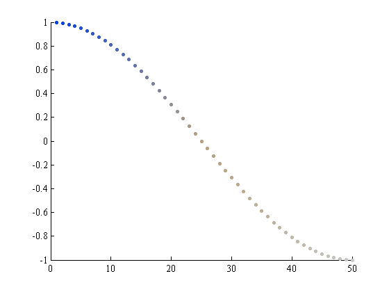
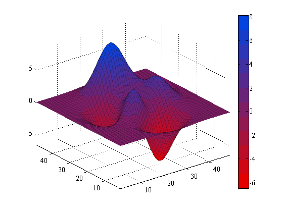
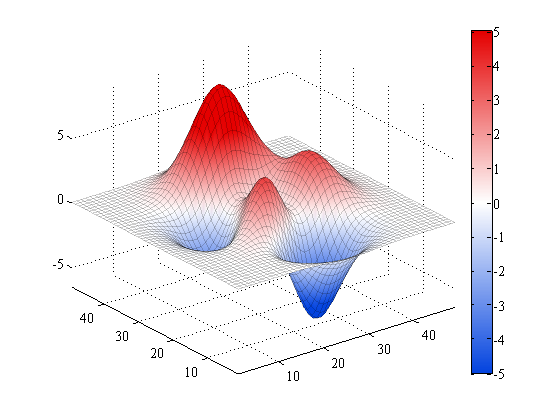
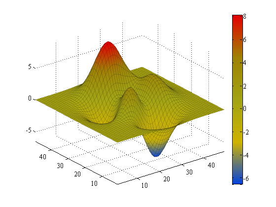
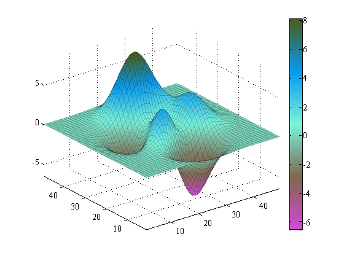

rgbmap
This function creates color maps from a list of any number of colors, given by their common names. Use of this function requires the rgb function which is available on File Exchange here. Color names recognized by this function are from a survey by Randall Munroe of XKCD. The survey and the 949 available colors are described in the rgb function documentation.
Contents
- Syntax
- Description
- Example 1: Create a nice color map for some scattered data
- Example 2: Get a 12-color map matrix from red to blue
- Example 3: Plot blue to white to red
- Example 4: Plot blue to red, passing through mustard, vomit, and diarrhea along the way
- Example 5: Pinkish purple to dark taupe to tiffany blue to army green, 1024 levels
- Author Info
Syntax
cmap = rgbmap('first color name','second color name')
cmap = rgbmap('first color name','second color name',...,'nth color name')
cmap = rgbmap(...,levels)
rgbmap(...)Description
cmap = rgbmap('first color name','second color name') creates an RGB color map cmap from some first color to a second color.
cmap = rgbmap('first color name','second color name',...,'nth color name') creates a color map linearly scaled between any number of colors.
cmap = rgbmap(...,M) specifies the approximate number of levels M of the M x 3 output colormap. Default value is 256.
rgbmap(...) sets the color map without creating an array in the workspace.
Example 1: Create a nice color map for some scattered data
x = 1:50; y = cos(x*pi/50); colors = rgbmap('blue','taupe','silver',50) ; scatter(x,y,30,colors,'filled')
Example 2: Get a 12-color map matrix from red to blue
cmap = rgbmap('red','blue',12)
cmap =
0.8980 0 0
0.8175 0.0239 0.0795
0.7369 0.0478 0.1590
0.6563 0.0717 0.2385
0.5758 0.0955 0.3180
0.4952 0.1194 0.3975
0.4146 0.1433 0.4770
0.3340 0.1672 0.5565
0.2535 0.1911 0.6360
0.1729 0.2150 0.7155
0.0923 0.2389 0.7950
0.0118 0.2627 0.8745
Now plot the cmap:
h = surf(peaks); colorbar colormap(cmap) set(h,'edgecolor','k','edgealpha',.2) axis tight
Example 3: Plot blue to white to red
h = surf(peaks); colorbar rgbmap('blue','white','red') shading interp set(h,'edgecolor','k','edgealpha',.2) caxis([-5 5]) axis tight
Example 4: Plot blue to red, passing through mustard, vomit, and diarrhea along the way
h = surf(peaks); colorbar rgbmap('blue','mustard','vomit','diarrhea','red') shading interp set(h,'edgecolor','k','edgealpha',.2) axis tight
Example 5: Pinkish purple to dark taupe to tiffany blue to army green, 1024 levels
h = surf(peaks); colorbar rgbmap('pinkish purple','dark taupe','tiffany blue','azure','army green',1024) shading interp set(h,'edgecolor','k','edgealpha',.2) axis tight
Author Info
This function was written by Chad A. Greene of the Institute for Geophysics at the University of Texas at Austin.